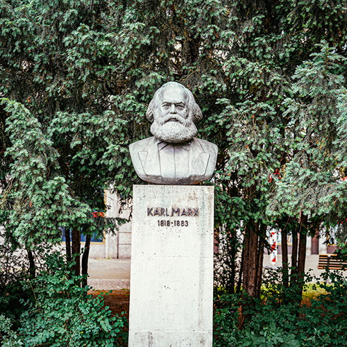

A nuanced overview of the milestone events of Berlin’s complex history via its most famous sites.
The perfect introduction to Berlin for first time visitors or anyone looking to find their feet in the city.
Learn More
Berlin
The Berlin Wall Tour
One Hour - € 150
Explore what remains of the Berlin Wall and retrace the trail of the ‘Death Strip’ along Bernauer Strasse
Examine the reality of utopian socialism up to the ‘Fall of the Wall’ and the phenomenon of Marxism-Leninism in practice.
Learn More
Berlin
The Third Reich Tour
One Hour - € 150
Delve into Berlin’s darkest chapter and explore what remains of the ‘Thousand Year Reich’.
Tour the former Nazi government quarter - from the remains of the SS/Gestapo headquarters to the site of Adolf Hitler’s Führerbunker.
Learn More
Berlin
The Cold War Tour
One Hour - € 150
Examine what remains of the frontier that once stood for the Cold War ideological confrontation between East and West.
From ‘Ground Zero’ at Potsdamer Platz to the line-in-the-sand at the Checkpoint Charlie border crossing.
Learn More
Berlin
The Battle Of Berlin Tour
One Hour - € 150
Explore where in 1945 the remnants of Adolf Hitler's crumbling regime would make their desperate last stand - where the coup de grâce to National Socialism was delivered.
Follow the route taken by the soldiers of the Soviet Red Army in 1945 in the bloody ‘Race to the Reichstag’.
Learn More
Berlin
The Prussian Berlin Tour
One Hour - € 150
Explore a reputation forged in battle and Berlin’s time as a royal capital - the story of the Iron Kingdom of Prussia.
See how the ruling Hohenzollern dynasty sought prestige and recognition from the muddy banks of the river Spree to the crowning achievements on Museum Island - all the way to the recently reconstructed Stadtschloss.
Learn More
Berlin
The Karl Marx Allee Tour
One Hour - € 150
Journey along the former showcase street of East Germany - a monumental boulevard originally named after Soviet leader, Joseph Stalin.
From the East German government quarter around Alexanderplatz to the eight-story residential buildings constructed in ‘Wedding Cake’ style.
Learn More

Berlin
The Jewish Quarter Tour
One Hour - € 150
Explore Berlin’s former Jewish quarter, an area transformed by persecution now representative of Berlin’s liberal savoir-faire.
Visit one of the city’s oldest synagogues and the former home of the world’s first female rabbi - learn of the important role this part of the city played in the 18th century Jewish Enlightenment movement.
Learn More
Berlin
The Secret Police HQ Tour
One Hour - € 150
Visit the preserved offices of Erich Mielke, the ‘Master of Fear’, long-time head of the East German secret police
Explore what life in the Workers’ and Peasants’ paradise of East Germany under the watchful eye of the Ministry for State Security was really like.
Learn More
Berlin
The Soviet War Memorial Tour
One Hour - € 150
Explore the monumental ground of the largest Soviet War Memorial in Berlin - the main commemorative memorial in the city for the fallen Soviet soldiers of the Second World War.
Representative of the narrative of the Great Patriotic War fought against Nazi Germany, the Soviet War Memorial in Treptower park remains one of the last places in Europe where the words of Joseph Stalin remain on public display.
Learn More
Berlin
The Tempelhof Airport Tour
One Hour - € 150
Explore this startling example of Nazi architecture, intended as a symbol of Adolf Hitler’s World Capital ‘Germania’.
One of Berlin’s most important airports - that served as a lifeline to West Berlin during the Berlin Blockade - and now stands as the largest inner city open space in the world.
Learn More
Berlin
The Olympic Stadium Tour
One Hour - € 150
Explore Berlin’s Olympic Stadium, the site of the 1936 Summer Olympics - the so-called ‘Nazi Games’.
Testament to the imperial and totalitarian vision of the National Socialist era, a structure that stands as one of the most complete examples of a formalised architectural language of dictatorship in the world.